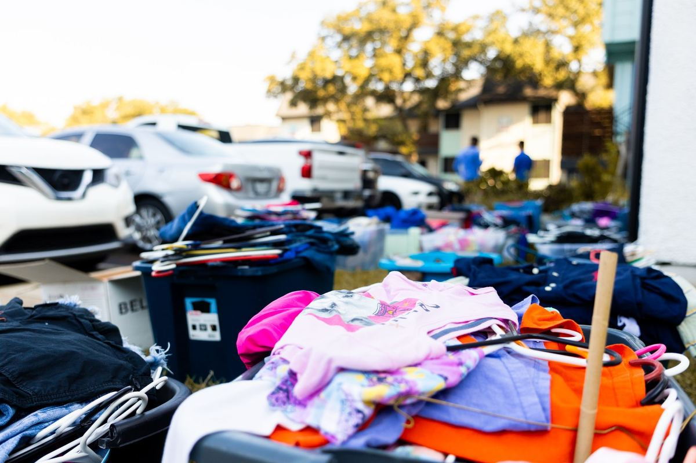

What does not sell at a garage sale usually splits three ways: things a donation center will take, things your city will collect as bulky trash, and things that need a hauler. Sort it the same afternoon, before it drifts back into the garage. If nobody has the time or the truck, a two-person crew can clear the whole driveway in one visit.
The plan for most garage sales is that the stuff leaves. The reality is that by two o'clock on Saturday the good pieces are gone, the tables are still covered, and the big items nobody wanted are sitting at the end of the driveway. The easiest mistake is carrying it all back inside to deal with later. Later tends to mean the next garage sale.
Why the leftovers are the hard part
The things that sell first at a garage sale are small, light and easy to carry to a car. What stays behind is the opposite.
- The big furniture. A sleeper sofa, a dresser missing a drawer, a dining set with one chair short. Buyers at a garage sale mostly arrive in sedans.
- The worn-out items. A treadmill that works if you know the trick, a recliner with a split seat, a mattress nobody wants to be seen buying.
- The boxes. Kitchen odds and ends, old picture frames, cords, toys, a box of books with water damage on the bottom.
- The electronics. An old TV, a printer, speakers. These cannot go in the trash, which surprises people.
That leaves you with a driveway full of things that are heavy, awkward, or not really worth anything to anyone, and a garage you were hoping to park in again.
Sort it before it goes back inside
Do this while the tables are still out. It is faster than it sounds, because you have already handled every item once.
- Donate. Clean, working items in decent shape. Small furniture, kitchenware, working lamps, kids' clothes and toys.
- Curb. Things your city takes on its bulky pickup day, if you have the time to wait for it and the space to leave it.
- Haul. Big, broken, or worn items no donation center will take and you do not want sitting at the curb.
- Special handling. Electronics, paint, chemicals, and anything with a motor that still has fuel in it.
Our garage cleanout checklist walks through the same sorting logic for the whole garage, if the sale was the first step in a bigger clear-out.
Keep the donate pile together and boxed. A donation center will look at a few neat boxes and a clean dresser. It will not sort through a loose pile on a driveway. Box it by room or type, and set it apart from everything else before anyone starts loading.
Where the donation pile can go
Clean, usable things have the best shot at a second home. Habitat for Humanity ReStores accept donated furniture and household goods at many locations, but each store sets its own list and its own condition rules, so check before you load a car. Our post on where to donate furniture in DFW covers what donation centers usually turn down, which saves you a wasted trip.
Be honest with yourself about this pile. If an item sat on a table for two days at a garage sale and nobody picked it up, a donation center may say no to it too. Upholstered pieces with stains, anything broken, and particleboard furniture that has already been moved once are the usual refusals.
What the city will take at the curb
Most cities around here run a bulky trash program. Plano's bulky waste collection page lays out what can go out, how to set it, and when. Other cities in the area run their own versions with their own schedules.
The catch is timing and effort. You have to get everything to the curb yourself, set it out on the right day, and live with it there until the truck comes. Anything the program excludes stays behind. We wrote a whole post about bulky trash the city skipped, because a pile that did not get picked up is one of the most common calls we get.
If you live in Plano, keep in mind the city also requires a permit for the sale itself. The city's garage sales and estate sales page covers the permit and how to find or host a sale. In Frisco, garage sale signs show up on the city's list of common code violations, so pull the signs down as soon as the sale is over.
What should never go in the trash
Two groups need their own route.
Electronics. Old TVs, monitors, printers and computers carry materials that belong in electronics recycling. The EPA's page on electronics donation and recycling explains why. We take electronics and route them to electronics recycling, and our post on appliance and electronics disposal in North Texas covers the rest of that category.
Household hazardous waste. Half-used paint, motor oil, pool chemicals, pesticides, propane tanks, and gas cans. We do not take these. In Plano they go to the household chemical collection service, and most DFW cities run a similar program at no charge. If the lawn mower that did not sell still has gas in it, drain it through that program first.
What we haul after a garage sale
On a typical post-sale pickup, the driveway holds some mix of:
- sofas, loveseats, recliners and the sleeper sofa nobody could lift into their SUV
- dressers, nightstands, bookcases and a dining table with or without its chairs
- mattresses and box springs
- exercise equipment, kids' bikes, outgrown toys and a folding crib
- boxes of kitchenware, decor, books and cords
- an old TV or two, and the stand it sat on
- the folding tables themselves, if they were borrowed from the garage for good
We load it from wherever it is, the driveway, the garage, or back inside, and we sweep up when we leave. These are our own crews, not gig labor. If you are in McKinney and the leftover pile is mostly the living room, see how we haul an old couch out of a McKinney home. For a Plano house clearing out the bedrooms, the notes on bedroom furniture pickup in Plano cover how that runs. For everything else in the city, our page on junk removal in Plano has the local details.
How the pickup runs
Send us a photo of the driveway, or of whatever is left in the garage. Tell us if anything is still upstairs.
A crew looks at what is going and gives you a firm number before anything is loaded. The quote is the bill, and disposal is included. We are affordable and priced fair, based on how much there is to take. Usable pieces go to local donation partners where they will take them, metal and cardboard go to recyclers, and electronics go to electronics recycling. Our stated goal is to keep more than half of every load out of the landfill.
Pickups run 7 days a week, which helps when the sale ends on a Saturday or Sunday. Call before noon and same afternoon is typical across the northern suburbs. When you are ready, tell us what is still on the driveway or read more about how our garage cleanouts work.
Frequently asked questions
Can you pick up garage sale leftovers the same weekend?
Often, yes. We run 7 days a week, and if you reach us before noon, same afternoon is typical across the northern suburbs. It is not guaranteed, so reach out as the sale winds down if you want the driveway clear that day.
Do I need to move everything to the curb first?
No. Leave it where it is, on the driveway, in the garage, or inside the house. We carry it out from there.
Will you take the things that can go to donation?
Yes. Usable furniture and household goods go to local donation partners where they will take them. Keep that pile boxed and together, and tell us which items you think are in good shape.
What will you not take?
Household hazardous waste, including paint, motor oil, gasoline, propane tanks and chemicals. Those go to your city's household chemical collection program, and we can point you to it.
Can you take just the big pieces and leave the rest?
Yes. Point at what is going and what is staying. You are only quoted for what we load.
The sale did its job on the small stuff. The rest can leave the driveway in one visit, and the garage can go back to holding a car.